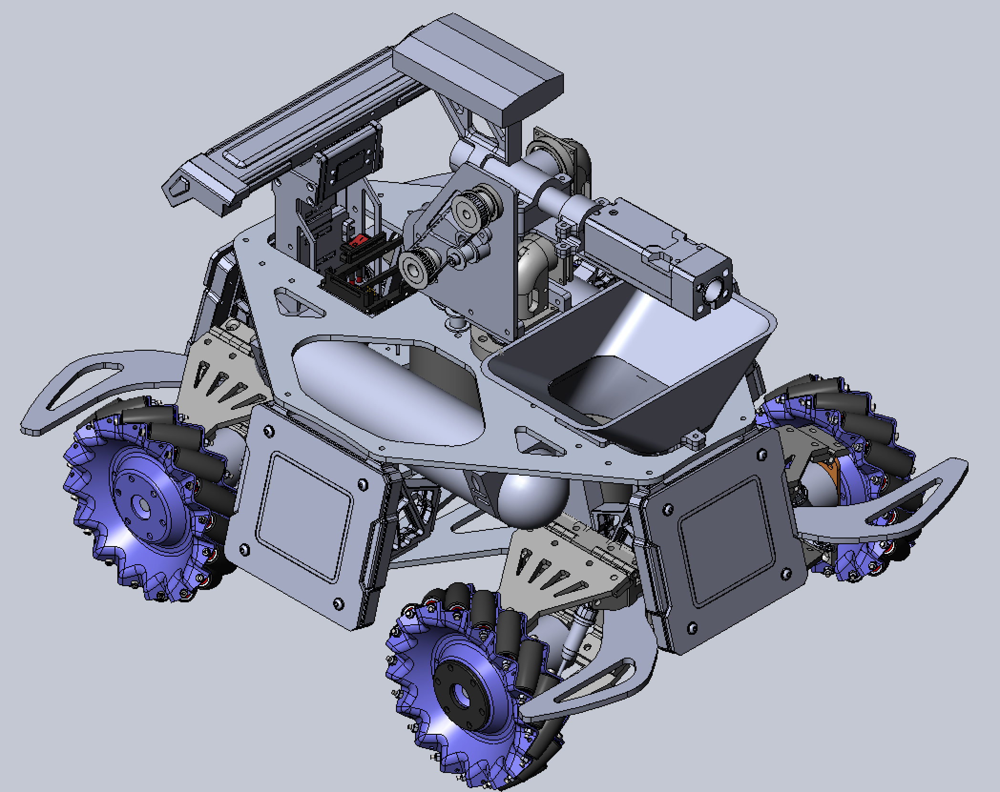
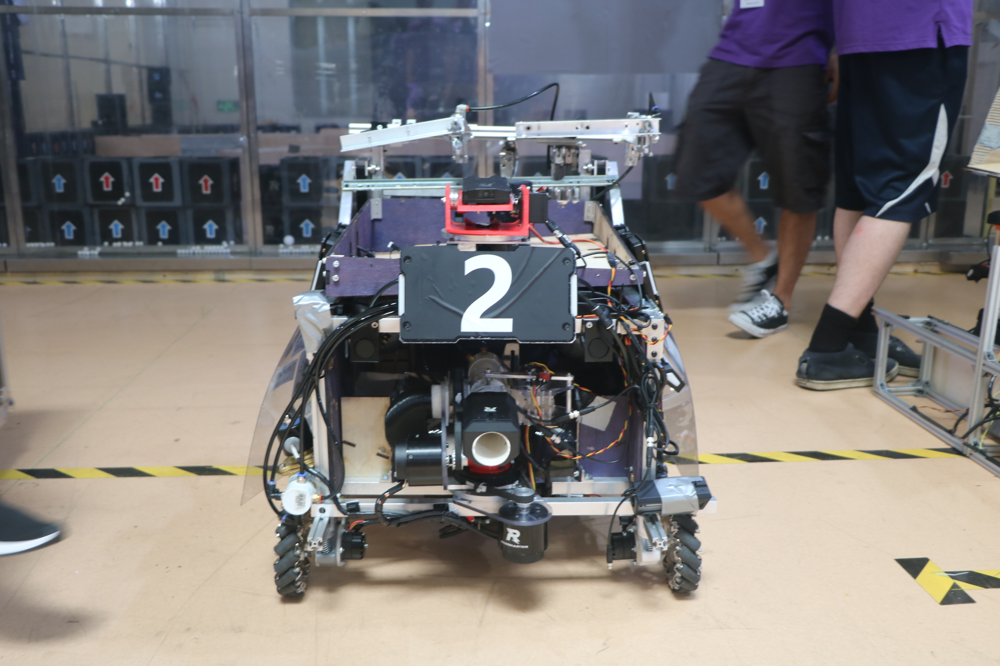
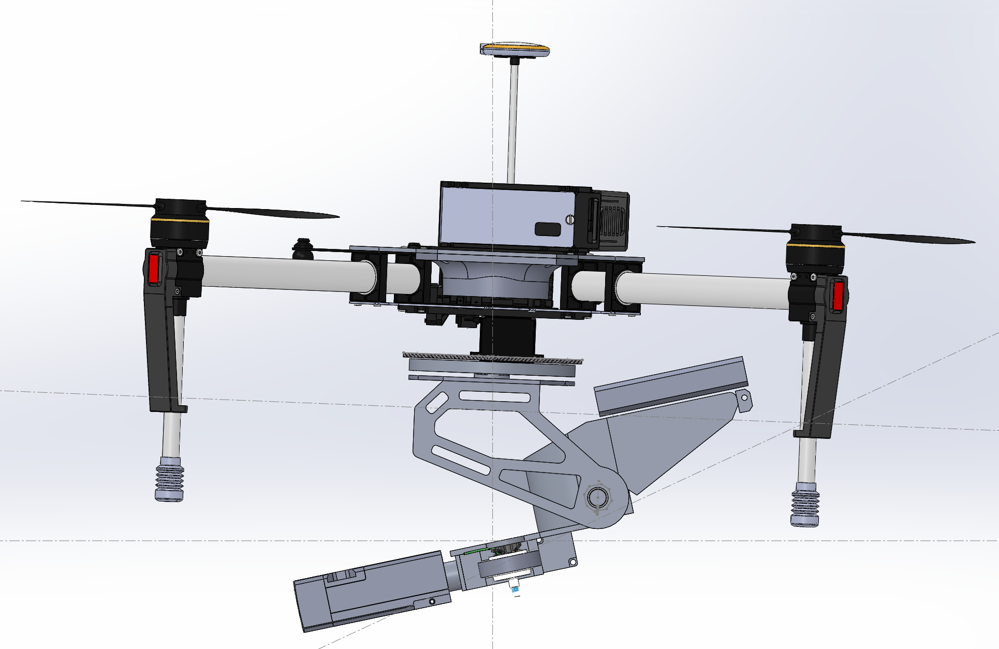

Our Robots!
Soldier:

The soldier robot is the smallest infantry robot. There are three
of these on the field and they fire the 17mm balls. They will be one
of the primary damage dealers and are meant for skirmishing and scouting
across the field. They will need to be reliable and highly mobile. Since
part of the challenge is to manufacture 3 copies they will need to be
both robust and easy to manufacture and maintain.
Hero:

The Hero robot is the largest and most powerful robot. It is the only
robot allowed to fire the 42mm rounds, which deal ten times as much
damage as the 17mm! However, because 42mm rounds are only found in the
middle of the field, it will be designed to collect its own 42mm rounds
as well as receive them from the Engineering robot mid-battle. The Hero
will take the brunt of the enemy fire, as well as lead the offensive so
it needs to be built very ruggedly, as well as able to outmaneuver the
enemy Hero robot.
Drone:

Drone is responsible for scouting out the field and keeping good
visibility for our ground based robots. It also has a mounted turret
for aerial support however has a limited supply of ammo so it is only
used in dire circumstances.